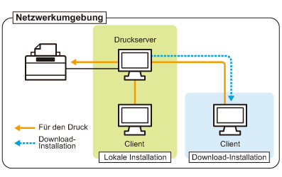

Wenn Sie den Drucker in der Druckserverumgebung verwenden, können Sie Druckvorgänge von anderen Computern (Clients) durchführen, die nicht direkt mit diesem Drucker verbunden sind.
 |
Der direkt mit dem Drucker verbundene Computer wird "Druckserver" genannt, während die übrigen Computer, die den Drucker über den Druckserver verwenden, "Clients" genannt werden.
|

Wenn Sie den Druckserver einrichten, können Sie den Drucker folgendermaßen effizient verwalten.
Sie können die Aufträge aller Clients auf dem Druckserver verwalten.
Clients können den Druckertreiber vom Druckserver herunterladen und installieren. (Die CD-ROM ist nicht erforderlich.)
Wenn Sie den Drucker in der Druckserverumgebung verwenden möchten, führen Sie eine der folgenden Tasks aus.
Wenn Ihr Computer der Druckserver ist
|
1.
|
Installieren Sie den Druckertreiber.
|
||
|
2.
|
Konfigurieren Sie den Druckserver.
|
Wenn Ihr Computer ein Client-Computer ist
Installieren Sie den Druckertreiber.
Es gibt zwei Möglichkeiten, den Druckertreiber auf Client-Computern zu installieren: die lokale Installation und die Download-Installation.
<Lokale Installation>
Sie können den Druckertreiber von der mitgelieferten CD-ROM installieren.
<Download-Installation>
Sie können den Druckertreiber ohne die mitgelieferte CD-ROM installieren, indem Sie den Druckertreiber vom Druckserver herunterladen. Es gibt die folgenden zwei Möglichkeiten, den Druckertreiber herunterzuladen und zu installieren.
|
HINWEIS
|
||
|
Vorsichtsmaßnahmen beim Herunterladen und Installieren des Druckertreibers
Wenn auf dem Druckserver ein 64-Bit-Betriebssystem aktiv ist, wird die Download-Installation für einen Client-Computer, auf dem eines der folgenden 32-Bit-Betriebssysteme aktiv ist, aufgrund der Windows-Einschränkung nicht unterstützt.
Windows 2000
Windows XP (auf dem kein Service Pack oder Service Pack 1 installiert ist)
Windows Server 2003 (auf dem kein Service Pack installiert ist)
|